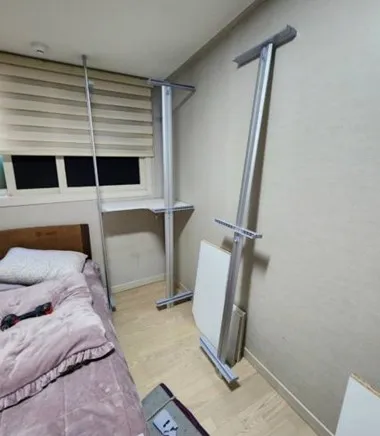

Compare
시스템행거
이사업체 vs 전문업체
어느 쪽이 맞는지는 행거 구성과 새 공간에 달려 있습니다.
이삿짐센터 중에는 시스템행거 해체·설치를 함께 해 주는 곳도 있고, 따로 알아보라고 안내하는 곳도 있습니다. 이삿짐 전체를 옮기는 일정 안에서 행거는 여러 작업 중 하나라서, 배치를 바꾸거나 부속이 많으면 시간이 부족할 수 있습니다.
이전설치 업체는 행거 해체와 재설치에 시간을 따로 쓰는 대신, 이삿짐과 일정을 맞춰야 합니다. 아래 비교를 보고 우리 집 상황에 맞는 쪽을 고르세요. 이삿짐은 이사업체에, 행거만 코니처에 맡기는 방법도 있습니다.

Situations
행거만 따로 맡기면 좋은 경우
새 공간에서 배치를 바꿀 때
구성을 다시 짜는 시간이 필요합니다.
서랍장·거울 등 부속이 많을 때
분리하고 다시 결합하는 데 손이 많이 갑니다.
이사업체가 어렵다고 할 때
행거 작업만 따로 맡기면 됩니다.
입주일이 이사일과 다를 때
설치 날짜를 따로 잡을 수 있습니다.
Checklist
비교표
| 항목 | 이사업체에 함께 맡길 때 | 행거만 따로 맡길 때 |
|---|---|---|
| 일정 | 이삿짐과 한 번에 | 이삿짐 일정에 맞춰 따로 방문 |
| 배치 변경 | 업체마다 다름 | 새 공간에 맞춰 재구성 |
| 부속 | 업체마다 다름 | 서랍장·거울까지 분리·결합 |
| 비용 | 이사 견적에 포함되기도 함 | 행거 작업만 따로 안내 |
| 확인할 점 | 행거 작업 포함 여부 | 이사 시간표와 겹치지 않는지 |
Process
이삿짐센터와 함께 진행하는 순서
이사 일정 공유
이사 시간표를 받아 작업 시간을 정합니다.
행거 먼저 해체
짐 반출 전에 행거를 해체합니다.
이삿짐 운반
해체한 부품은 이삿짐과 함께 옮길 수 있습니다.
행거 설치
새 집에 짐이 들어온 뒤 설치합니다.
점검
수평과 흔들림을 확인합니다.
FAQ
자주 묻는 질문
이사업체가 행거도 해 준다는데 따로 맡겨야 하나요?
구성이 단순하고 새 공간 배치가 같다면 함께 맡기셔도 됩니다. 배치를 바꾸거나 부속이 많으면 따로 맡기는 것도 고려해 보세요.
이삿짐센터와 같은 날 가능한가요?
네, 짐 반출 전에 해체하고 반입 후 설치하도록 일정을 맞춥니다.
부품 운반은 누가 하나요?
이삿짐센터에 함께 싣거나 따로 옮기는 방법 중 편한 쪽으로 정합니다.
두 업체 일정이 엇갈리면요?
이사 시간표를 미리 받아 해체와 설치 시간을 맞춥니다.
이사 없이 행거만 옮길 때도 되나요?
네, 방간이동이나 재배치처럼 이사가 없는 작업도 합니다.